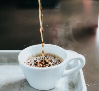
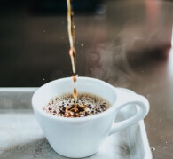
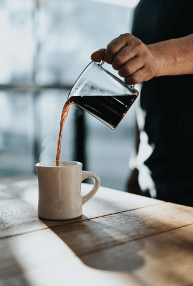
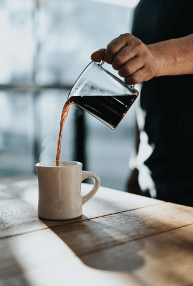

RAROcoffee
Приготовлен с
любовью
Немного о том, как создается настоящий шедевр кофейного
искусства
искусства
Несколько лет назад появился новый способ приготовления кофе. Всего за 30 секунд Вы получаете потрясающе вкусный и ароматный напиток. И все, благодаря капсульной кофемашине - лучшего изобретения для кофеманов.
Несколько лет назад появился новый способ приготовления кофе. Всего за 30 секунд Вы получаете потрясающе вкусный и ароматный напиток. И все, благодаря капсульной кофемашине - лучшего изобретения для кофеманов.

Уникальная “кофеварка” экономит силы и время, облегчает процесс
приготовления кофе и определяет идеальную дозировку любимого
напитка.
Собрав все лучшие виды, мы наслаждались этим кофе лишь в кругу
семьи и друзей. Но со временем желающих попробовать его
становилось все больше и больше. Поэтому и было решено начать
массовое производство по собственным рецептам. Так и началась
история RAROcoffee.
 

 

Желание сохранить все богатство натурального кофе привело нас к удивительному открытию - капсулам. С их помощью получилось надежно герметизировать измельченные зерна сразу после обжарки. За счет этого Вы получаете 100% вкуса и аромата бодрящего напитка прямо с лучших кофейных плантаций.
В пути аромат напитка терялся, становился беднее. Поэтому, самый вкусный кофе был доступен только на плантациях. Теперь он будет с Вами всегда!
Каждый из вкусов обладает своей неповторимой
уникальностью, ароматом, и даже историей...
Перед помолом зерна деликатно обжариваются. Напиток обладает пряным вкусом, чудесным ароматом и богатым послевкусием.


Напиток насыщенной текстуры с тонкими фруктовыми нотками. Крепость этого кофе ценится настоящими гурманами!


Каждая капсула RAROcoffee - это увлекательное путешествие вокруг света. Кофейные зерна из Коста-Рики, Бразилии, Центральной и Южной Америки, жаркой Африки, Ямайки проходят тщательный отбор, прежде чем подарить Вам магическую гармонию вкуса и аромата. Получайте яркие впечатления с чашечкой RAROcoffee.
Каждая капсула - это плотно упакованная, оптимальная порция натурального кофе


Желание сохранить все богатство натурального кофе привело нас к удивительному открытию - капсулам. С их помощью получилось надежно герметизировать измельченные зерна сразу после обжарки. За счет этого Вы получаете 100% вкуса и аромата бодрящего напитка прямо с лучших кофейных плантаций.
На данный момент в мире насчитывается
более 800 сочетаний ароматов кофе.
Удивительно, не правда ли?
Кофейная традиция длится более 900 лет. С течением времени улучшалась
рецептура и развивалась технология приготовления.
И сейчас RAROcoffee - это вершина кофейной культуры.

“Настоящая любовь – это вкус кофе,
который варишь дома по утрам...”


Если Вы, как и я, начинаете свой день вместе с кофе - тогда Вы влюбитесь в RAROcoffee. У него столько разнообразных вкусов, ароматов... и при этом его так легко готовить! Одна капсула утром - и уже легче покорять мир.
Из-за новой работы сейчас просыпаюсь очень рано. Поэтому без кофе просто невозможно. Но готовить его правильно тяжело, особенно по утрам. RAROcoffee это мое спасение! Нажал на кнопку - и все! Вкуснейший кофе готов.
И где раньше был этот кофе? Сколько его видов испробовал, такого богатого вкуса давно не пробовал. А готовить его настолько просто, что иногда даже не верится, что я все годы жил без него.
У нас с друзьями появилась любопытная традиция. Примерно раз в неделю собираемся обсудить последние новости. И неизменным атрибутом наших встреч является RAROcoffee.

Честно сказать - я обожаю чай. К кофе всегда был впринципе равнодушен. Но не так давно в гостях меня угостили RAROcoffee. Я был честно поражен. И вот - спустя неделю рядом с моими чаями стоит упаковка RARO.
Мы с удовольствием на них ответим! Даже
поможем выбрать тот самый вкус RARO.
Напишите нам, это просто.
info@rarocoffee.com
ПРИ ПОСЕЩЕНИИ ВСЕХ ОНЛАЙН РЕСУРСОВ RAROcoffee ВЫ ДАЕТЕ СВОЕ СОГЛАСИЕ НА ИСПОЛЬЗОВАНИЕ ФАЙЛОВ COOKIE, КОТОРЫЕ УЛУЧШАЮТ НАШ СЕРВИС.
Если Вы не соглашаетесь с тем, чтобы ресурс использовал cookie-файлы, Вы можете изменить настройки Вашего браузера или покинуть этот сайт.
Cookie-файлы – это небольшие, безопасные текстовые файлы, которые отправляет сайт и затем сохраняются на Вашем ПК, смартфоне, планшете или другом устройстве, которым Вы пользуетесь при посещении онлайн-ресурса.
Файлы этого типа обеспечивают более быстрый, удобный и простой доступ к содержимому сайта, определяют эффективность рекламы и поисковых систем. Cookie-файлы облегчают навигацию по сайту, предоставляют информацию о наиболее посещаемых виртуальных страницах, действиях пользователей, что способствует продвижению продуктов.
Cookie позволяют Вам сохранить данные при обновлении сайта. Файлы этого типа не располагают информацией, которая позволяет идентифицировать Вашу личность.
При отключении этой функции мы не несем ответственности за корректную работу онлайн-ресурса в Вашем браузере.
Все онлайн-ресурсы RAROcoffee используют следующие категории cookie-файлов:
- Основные cookie , которые устанавливаются сайтом и могут быть прочитаны только этим сайтом. Например, когда файл cookie с нашего сайта передается в Ваш браузер, только наш сайт сможет его распознать.
- Сторонние cookie, которые устанавливаются не RAROcoffee, а, например, сторонней аналитической компанией, которая передает в Ваш браузер собственные файлы cookie.
Мы предоставляем вам список файлов cookie, которые используем:
Пожалуйста, учтите, что сторонние cookie управляются соответствующими партнерами и поставщиками услуг. У нас нет ни доступа к файлам cookie наших партнеров, ни возможности их контролировать. Вам нужно ознакомиться с политикой в отношении файлов cookie соответствующей сторонней компании, чтобы узнать больше об использовании информации, которую они собирают.
Мы используем cookie, чтобы лучше понимать, как вы взаимодействуете с материалами на наших ресурсах. Кроме того, эти небольшие файлы могут дополнить ваши впечатления от использования, так как запоминают Ваши личные предпочтения. Cookie помогают нам считать, сколько пользователей посещают определенные страницы наших ресурсов.
Еще одна причина использования файлов cookie – показывать Вам материалы, подобранные под Ваши конкретные интересы. В частности, они помогают изучать Ваше поведение, чтобы показывать Вам таргетированную рекламу на сторонних сайтах с целью подбора товаров и услуг под Ваши индивидуальные потребности.
Любой браузер, загрузивший наш сайт, получит cookie. Вы всегда можете отказаться от обоих типов cookie на нашем сайте, изменив у себя настройки файлов cookie.
Прежде всего, пожалуйста, учтите, что большинство браузеров принимает cookie по умолчанию. Вы имеете право принять или отклонить передачу файлов cookie на Ваш ПК или другое устройство, в любое время изменив настройки в вашем браузере в соответствии с вашими предпочтениями в отношении файлов cookie.
Вы можете контролировать и/или удалять файлы cookie по Вашему усмотрению.
Вы можете удалить все файлы cookie, уже имеющиеся на вашем ПК или другом устройстве, и настроить большинство браузеров на отказ принимать файлы cookie. Однако в этом случае Вам придется вручную корректировать некоторые установки при каждом посещении сайта. Из-за этого некоторые сервисы и функции могут не работать должным образом.
Способы управления cookie-файлами указаны в инструкции Вашего браузера.
ПРИНИМАЮ